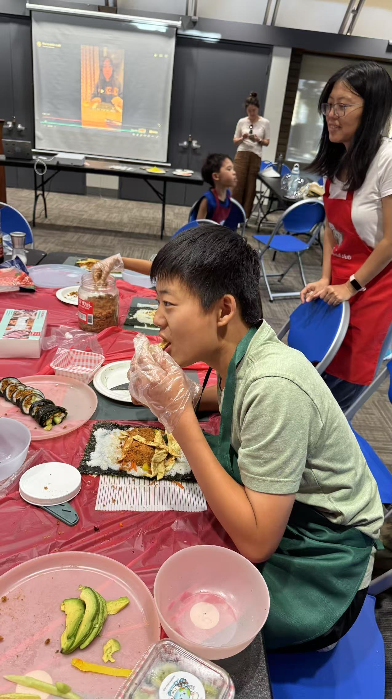
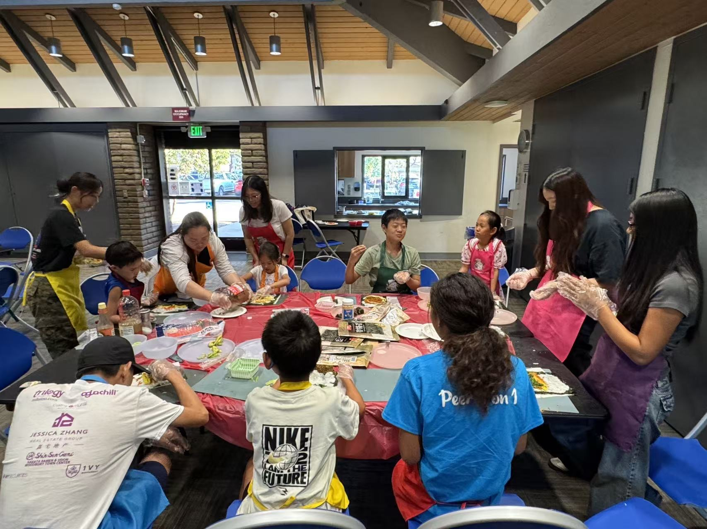
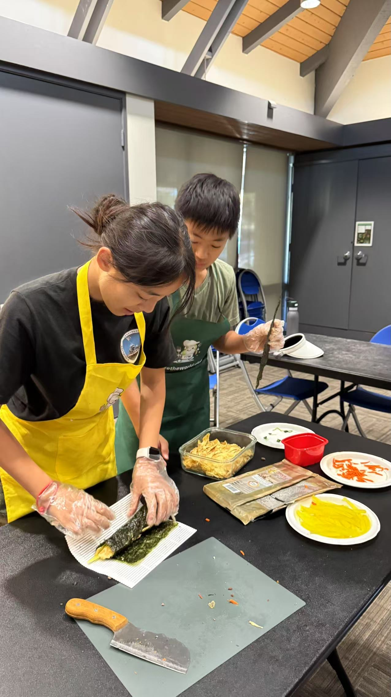
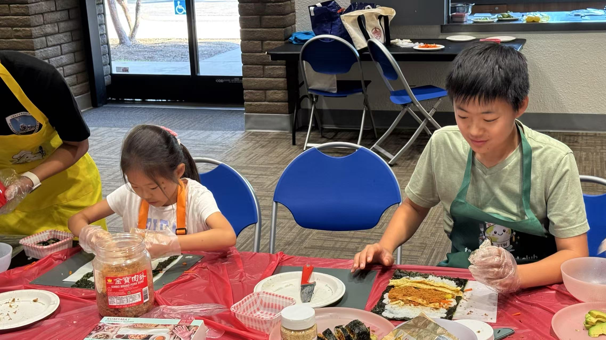
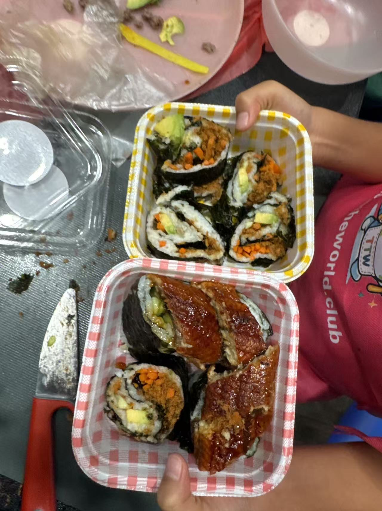
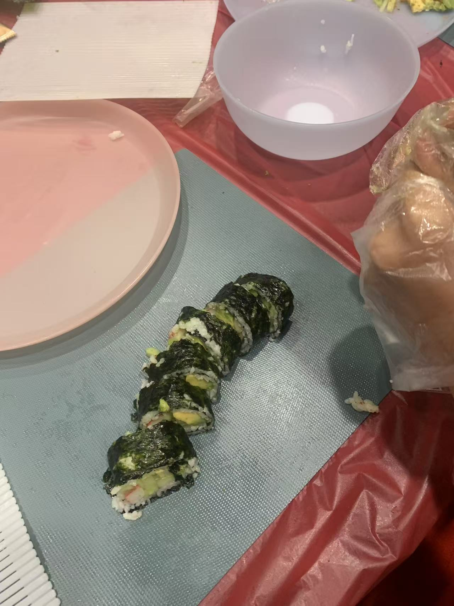

在寿司卷里，收藏阳光与快乐 🍣
这一次，Raina 同学带领大家一起制作日本寿司和韩国紫菜包饭（Gimbap）。从铺米饭、放配菜，到卷起、切开、装盒，每一个步骤都充满了专注与期待。



一个特别 peaceful 的下午
不知不觉，Taste the World Club 已经走到了第四次活动。以往的每次活动都忙碌得像“打仗”一样，而今天却格外从容、平静，也格外温暖。
最喜欢的，是孩子们阳光明媚的笑容。当亲手做出的寿司终于完成，大家兴奋地装盒、拍照、分享，那份写在脸上的成就感，仿佛真的可以吹散所有阴霾。
我们知道，这一代孩子并不容易。未来，他们不仅会面对人与人之间的竞争，也会面对人工智能时代带来的全新挑战。希望孩子们能在这个小小的 Club 里感受到温馨与快乐，带着这份阳光和自信走过每一天，也把快乐传递给身边的每一个人。


